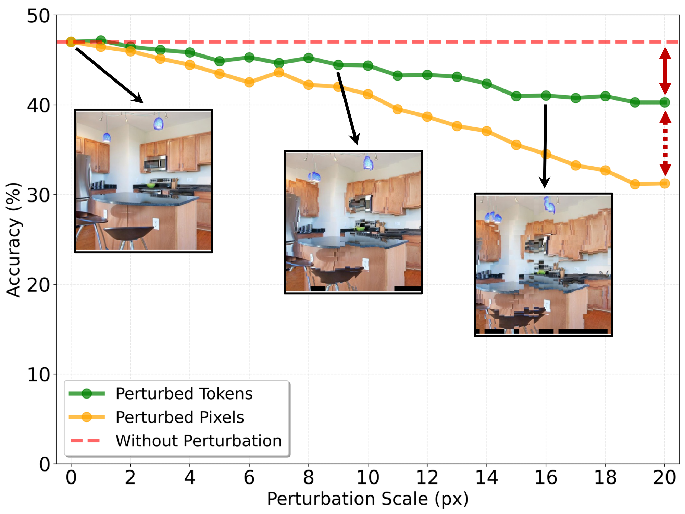
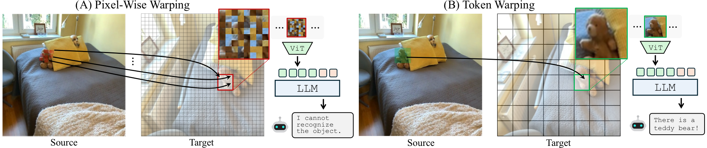
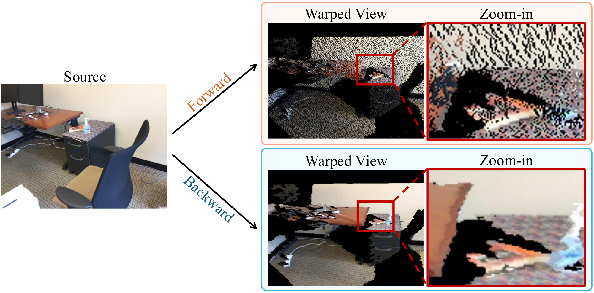
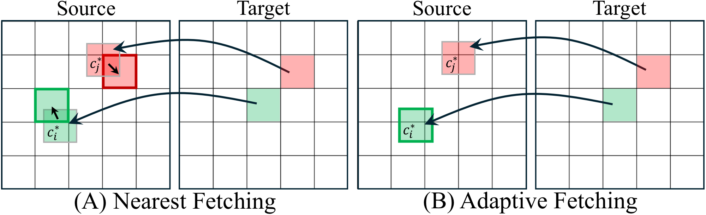
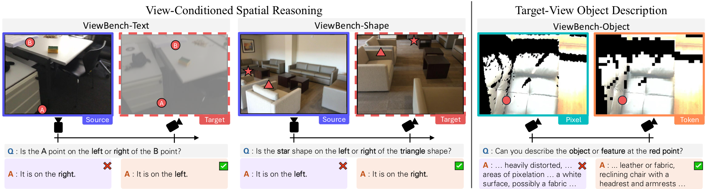

Image tokens are inherently robust to positional perturbations, making them ideal for geometric viewpoint transformations.
Modern ViT-based MLLMs represent images as a sequence of image tokens — localized, semantically meaningful units that function as perceptual atoms. Inspired by theories of mental imagery, we hypothesize that tokens provide the right part-level granularity for viewpoint transformation.
Object-level representations are too coarse, sacrificing important spatial and appearance details. Pixel-level representations are too fine-grained and sensitive to even small depth or geometric noise. Image tokens lie between these extremes, retaining rich visual detail while remaining robust to local perturbations.
The model exhibits only mild degradation in the large-perturbation regime (19–20 pixels) — token representations in MLLMs are highly robust to noise in the image positions from which tokens are fetched.

A lightweight, training-free approach that warps image tokens using depth maps to simulate novel viewpoints.
Retrieves individual pixels at each target coordinate. Even small depth errors cause severe local distortions and semantic degradation, leading to degraded MLLM understanding.
Retrieves intact tokens (patches) from the source view, preserving local semantics as coherent units. Robust to positional noise, enabling reliable viewpoint-aware perception.


We explore two axes of design: the warping direction (forward vs. backward) and the token fetching strategy (nearest vs. adaptive).
Projects source tokens to target viewpoint positions. Results in irregular, sparse token placement with holes — out-of-distribution for MLLMs trained on dense grids.
Defines a regular grid at the target view and maps each position back to the source. Produces dense, regularly spaced tokens that MLLMs expect.
Finds the closest existing token in the source grid for each mapped coordinate. Simple and efficient — performs comparably to adaptive fetching.
Dynamically crops a new patch centered at the mapped coordinate for re-encoding. More flexible but requires additional computation.

A benchmark for evaluating MLLMs on spatial reasoning tasks that require imagining a scene from alternative viewpoints.
Evaluate left-right spatial reasoning between two text-labeled points after a viewpoint change. Tests whether MLLMs can infer how relationships reverse.
Text Labels
Same spatial reasoning task but using simple geometric shapes (star, triangle) as reference points instead of text labels.
Shape Labels
Assess whether the MLLM can accurately describe objects as they would appear from the target viewpoint, preserving fine-grained visual details.
Description (1-10)

Text, Shape) and to describe object properties visible in the warped target view (Object).
Backward token warping consistently outperforms all baselines across every task and difficulty level.
| Method | ViewBench-Text (%) | ViewBench-Shape (%) | ViewBench-Object (1-10) | ||||||
|---|---|---|---|---|---|---|---|---|---|
| 5-15 | 15-25 | 25-35 | 5-15 | 15-25 | 25-35 | 5-15 | 15-25 | 25-35 | |
| Specialist MLLMs | |||||||||
| SpatialReasoner | 46.73 | 53.30 | 53.71 | 33.72 | 38.27 | 48.15 | — | — | — |
| VLM-3R | 63.82 | 70.56 | 60.57 | 49.22 | 49.79 | 50.21 | — | — | — |
| ViLaSR | 44.22 | 52.28 | 48.00 | 22.87 | 23.05 | 34.57 | — | — | — |
| Qwen2.5-VL | 46.23 | 59.39 | 52.00 | 24.42 | 25.10 | 37.86 | — | — | — |
| Novel View Synthesis | |||||||||
| GenWarp | 69.35 | 71.07 | 66.29 | 53.10 | 47.33 | 55.14 | 4.32 | 4.81 | 4.34 |
| Pixel-Wise Warping | |||||||||
| Forward | 70.85 | 73.60 | 62.86 | 56.20 | 56.79 | 60.49 | 3.22 | 4.04 | 4.78 |
| Backward | 71.86 | 75.63 | 68.57 | 62.40 | 58.02 | 66.67 | 4.53 | 5.52 | 5.94 |
| Token Warping | |||||||||
| Forward | 60.30 | 64.47 | 54.86 | 55.04 | 55.14 | 53.09 | 4.09 | 4.27 | 4.07 |
| Backward-Nearest Ours | 74.87 | 80.71 | 74.86 | 67.44 | 62.96 | 73.25 | 4.80 | 5.39 | 6.19 |
| Backward-Adaptive Ours | 77.89 | 79.70 | 78.86 | 67.44 | 66.26 | 75.72 | 4.97 | 5.76 | 6.11 |
Bold = best, underline = second best. View overlap ranges indicate difficulty (lower = harder). All results use GT depth. Evaluated with Qwen2.5-VL 14B.
Visual comparisons of warped results across methods. Token warping (our backward variants) preserves scene structure and enables correct spatial reasoning, while pixel-wise warping introduces severe artifacts and generative approaches may hallucinate content. The pixelated images in the token warping columns are displayed solely for visualization; the framework operates entirely on token embeddings. Below each image we show the response from Qwen2.5-VL when given the corresponding warped result.
ViewBench-Text Q: "Is the A point on the right or left of the B point?" Answer: "left"
Our method Ground truth green = correct red = wrong
We thank Daehyeon Choi and Sangwoo Youn for their valuable discussions. This work was supported by the National Research Foundation of Korea (NRF), the Institute of Information & Communications Technology Planning & Evaluation (IITP), the Industrial Technology Innovation Program, and the National Supercomputing Center, funded by the Korean government (MSIT/MOTIE).
@inproceedings{lee2026tokenwarping,
title={Token Warping Helps MLLMs Look from Nearby Viewpoints},
author={Lee, Phillip Y. and Park, Chanho and Park, Mingue and Yoo, Seungwoo and Koo, Juil and Sung, Minhyuk},
booktitle={Proceedings of the IEEE/CVF Conference on Computer Vision and Pattern Recognition (CVPR)},
year={2026}
}